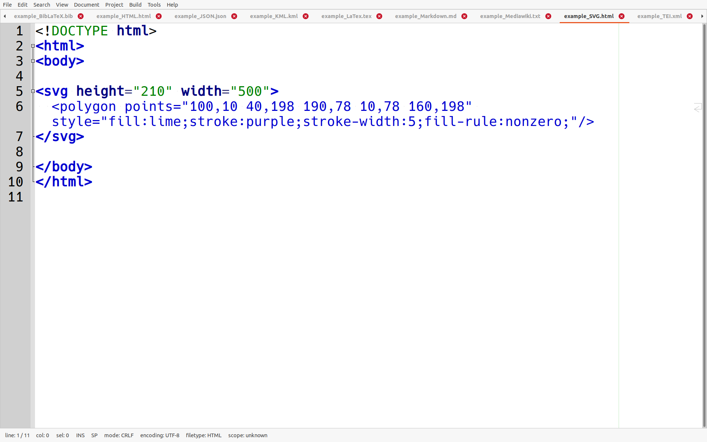
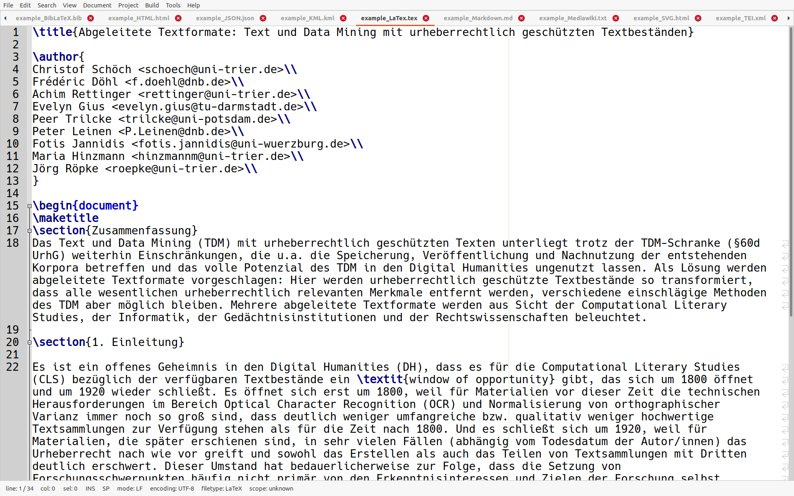

# Datenformate in den Digital Humanities (E01) <br/> <hr/> <br/>Prof. Dr. Christof Schöch <br/> <br/> <hr/> <p><strong>Modul Auszeichnungssprachen<br/>MSc. Digital Humanities, Universität Trier</strong></p> <hr/> <img height="60" data-src="img/basics/uni-trier.png"> :: - Ziele dieser Sitzung: - Auszeichnungssprachen in ihrem Kontext verorten - Überblick über Datenformate in den DH geben - Allgemein: - Programmiersprachen für Algorithmen - Datenformate für Datenhaltung -- ## Überblick 1. [Datenformate im Überblick](#/3) 1. [Datenformate im Einzelnen](#/4) -- ## (1) Datenformate im Überblick --- ### Schichten der Datenrepräsentation 1. Untersuchungsgegenstand: realweltlicher Gegenstand 1. Modellierte Instanz: digitale Repräsentation des Gegenstands 1. Datenformate: strukturieren die Informationen 1. Zeichenfolge: unstrukturierte Abfolge von Zeichen 1. Zeichenkodierung: bspw. Unicode/UTF-8: Code für jedes Zeichen 1. Binärcode: Repräsentation der Zeichencodes im Speicher --- #### Datenformate in den DH :: - Im Modul geht es primär um die Auszeichnungssprachen (semi-strukturiert und markup-basiert) - Aber all die anderen Formate werden Ihnen in den DH auch ständig begegnen --- ### Pixelgrafik (Quelle: [Wikipedia: "Punktdichte+Farbtiefe"](https://de.wikipedia.org/wiki/Datei:Punktdichte+Farbtiefe.svg), Nutzer [Friedrich Graf](https://de.wikipedia.org/wiki/Benutzer:Friedrich_Graf), Lizenz [CC BY-SA](https://creativecommons.org/licenses/by-sa/3.0/de/legalcode).) --- ### Datenbanken (Quelle: [Wikipedia Database Schema](https://commons.wikimedia.org/wiki/File:MediaWiki_1.28.0_database_schema.svg), Nutzer [Timo Tijhof](https://commons.wikimedia.org/wiki/User:Krinkle), [CC BY](https://creativecommons.org/licenses/by/).) --- #### Semi-strukturierte Formate * Nicht Markup-basiert <!-- .element: class="fragment" data-fragment-index="1" --> * [**CSV/TSV**: Comma/Tab-Separated Values](data/example_TSV.tsv) * [**JSON**: JavaScript Object Notation](data/example_JSON.json) ([tweet](data/example_Tweet-in-JSON.json)) * [**BibLaTeX**](data/example_BibLaTeX.bib) * Markup-basiert (XML) <!-- .element: class="fragment" data-fragment-index="2" --> * [**HTML**: HyperText Markup Language](data/example_HTML.html) * [**XML**: eXtensible Markup Language](data/example_XML.xml) * [**KML**: Keyhole Markup Langauge](data/example_KML.kml) * [**TEI**: Text Encoding Initiative](data/example_TEI.xml) * [**SVG**: Scalable Vector Graphics](data/example_SVG.html) ([live](https://www.w3schools.com/graphics/tryit.asp?filename=trysvg_polygon3)) * Markup-basiert (nicht XML) <!-- .element: class="fragment" data-fragment-index="3" --> * [**LaTeX**](data/example_LaTex.tex) * [**MediaWiki**](data/example_Mediawiki.txt) * [**Markdown**](data/example_Markdown.md) -- ## (2) Dateiformate im Einzelnen --- ## Was macht Datenformate geeignet? * Weit verbreitet und standardisiert * Nicht proprietär * Offen dokumentiert * Verlustfreie oder keine Kompression * Einfach dekodierbar oder unmittelbar lesbar (Nach: "IT-Empfehlungen. Für den nachhaltigen Umgang mit digitalen Daten in den Altertumswissenschaften", IANUS, Version 1.0.1.0, 2017. https://www.ianus-fdz.de/it-empfehlungen/.) --- ## Nicht Markup-basiert --- #### CSV/TSV [**CSV/TSV**: Comma/Tab-Separated Values](data/example_TSV.tsv) --- #### JSON [**JSON**: JavaScript Object Notation](data/example_JSON.json) :: - Wichtig immer da, wo Daten zwischen Server und Browser ausgetauscht werden - Sehr leichtgewichtig und einigermaßen lesbar - Feldnamen und Werte - Hierarchisch schachtelbar --- #### JSON (Tweet) <img height="450" data-src="img/E01/json-tweet.png"> [**JSON** (Tweet)](data/example_Tweet-in-JSON.json) --- #### BibLaTeX [**BibLaTeX**](data/example_BibLaTeX.bib) :: - Ähnlich wie JSON, aber etwas andere Syntax - Beachte: Publikationstyp am Anfang --- ## Markup-basiert: XML --- #### HTML (xHTML) [**HTML**: HyperText Markup Language](data/example_HTML.html) :: - Typisch für HTML: - teils darstellungsorientiert ("bold", "smaller") - teils bedeutungsorientiert ("h1", "emph") - Mächtig vor allem in Kombination mit CSS (Darstellung) und JavaScript (Interaktionen) - Inzwischen meist von xHTML abgelöst (auf XML basierende Variante) --- #### XML (WLV) [**XML**: eXtensible Markup Language](data/example_XML.xml) :: - Meta-Auszeichnungssprache - Nur wenige, grundlegende - Hier ein Beispiel für die Kodierung von Weinetiketten --- #### KML <img height="450" data-src="img/E01/kml.png"> [**KML**: Keyhole Markup Langauge](data/example_KML.kml) <br/>siehe auch: GML (Geography Markup Language) :: - Für Google Earth entwickeltes Format - Kann noch wesentlich komplexer werden als hier gezeigt --- #### TEI [**TEI**: Text Encoding Initiative](data/example_TEI.xml) :: - Der "de facto" Standard für Textkodierung in den Geisteswissenschaften - So wichtig, dass wir hier drei Sitzungen darauf verwenden werden --- #### SVG  [**SVG**: Scalable Vector Graphics](data/example_SVG.html) ([live](https://www.w3schools.com/graphics/tryit.asp?filename=trysvg_polygon3)) :: - Vorteile gegenüber Pixelgrafik - Skaliert beliebig - kleine Dateien - Menschenlesbar (und modifizierbar) - Nachteile - Bei komplexen Bildern wird auch die Datei sehr komplex --- ## Markup-basiert: nicht XML --- #### LaTeX  [**LaTeX**](data/example_LaTex.tex) :: - Vor allem in der Linguistik und CL viel genutzt - Einfache Integration von BibTeX - Einfache Darstellung von mathematischen Formeln - Kurzer Weg zu einer PDF-Datei mit gutem Layout --- #### Mediawiki [**MediaWiki**](data/example_Mediawiki.txt) :: - Liegt Wikipedia zugrunde --- #### Markdown [**Markdown**](data/example_Markdown.md) :: - Sehr einfache Syntax, sehr lesbar - Kann mit HTML kombiniert werden - Kann in HTML überführt werden -- ## Fazit --- #### Fazit Auszeichnungssprachen * Vorteile <!-- .element: class="fragment" data-fragment-index="1" --> * Von Menschen und Maschinen lesbar * Metadaten, Markup und Text/Daten bleiben zusammen * Inhalt und Struktur gemeinsam, Darstellung davon getrennt (CSS) * Daten sind letztlich einfach Textdateien (nachhaltig) * Nachteile <!-- .element: class="fragment" data-fragment-index="2" --> * Etwas "verbose" * komplexer zu erstellen als "plain text" * weniger performant als Datenbanken --- #### Fazit XML * Vorteile <!-- .element: class="fragment" data-fragment-index="1" --> * XML ist eine Meta-Auszeichnungssprache (siehe: SVG, KML, TEI, etc.) * Man kann damit beliebige Auszeichnungssprachen definieren (siehe: WLV) * Validierung nach Schema (Datenmodell) möglich (sehr wichtig!) * für Textauszeichnung und Datenhaltung geeignet * extrem weit verbreitet * Nachteile <!-- .element: class="fragment" data-fragment-index="2" --> * (wie für Auszeichnungssprachen allgemein) --- #### Lektüreempfehlung * Kapitel "Datenformate" in: *IT-Empfehlungen. Für den nachhaltigen Umgang mit digitalen Daten in den Altertumswissenschaften*, IANUS, Version 1.0.1.0, 2017. https://www.ianus-fdz.de/it-empfehlungen/. * Johanna Puhl (Hauptautorin): "Empfehlungen für Forschungsdaten, Tools und Metadaten in der DARIAH-DE Infrastruktur", *DARIAH-DE Wiki*, 2017, https://wiki.de.dariah.eu/pages/viewpage.action?pageId=38080370. -- ## Danke! <br/><br/> <br/><br/> <br/><br/> <hr/> <small> <br/>Lizenz: <a href="https://creativecommons.org/licenses/by/4.0/">Creative Commons Attribution (CC BY)</a>, 2020. </small> <hr/>